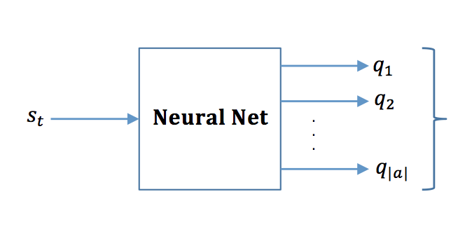

In this post I am going to talk about Deap Q Learning (DQN). The main idea is based on two papers that were published in 2013 and 2015 by Google Deepmind. The firt one is a NIPS paper and lets call it DQN1. The second paper is a nature paper and we call it DQN2 in this post. DQN1: Playing Atari with Deep Reinforcement Learning DQN2: Human-level control through deep reinforcement learning The main idea of these two papers is to be able to beat the computer at Atari games with no human intervention. The papers combine ideas from reinforcement learning (Q-learning) and deep learning (CNN) in order to achieve the performance. First let's talk about Q-learning. Q-learning is a dynamic programming approach for updating our estimation about agent's future success. In Q-learning agents experience consists of a sequence of distinct stages or episodes. At the \(t^{th}\) times states of the \(n^{th}\) episode, agent: Observes its current state \(s_t\) Selects and performs an action \(a_t\) Observes the subsequenct state \(s_{t+1}\) Adjusts its Qn-1 value using the learning factor \(\alpha_{n}\) according to \[ {Q_{n}(x,a)} = \left\{ \begin{array}{ @{}% no padding l@{\quad}% some padding r@{}% no padding >{{}}r@{}% no padding >{{}}l@{}% no padding } (1-\alpha_{n})Q_{n-1}(s_t,a) + [r + \gamma V_{n-1}(s_{t+1}) ]& \\ Q_{n-1}(s_t,a) & terminal &state \end{array} \right. \] in which \(V_{n-1}(s_{t+1})\) is the best possible value that the agent can achieve from state \(s_{t+1}\) on ward, in other words expected future reward. $$V_{n-1}(s_{t+1}) = \max_{b} {Q_{n-1}(s_{t+1},b)}$$ \(\alpha_n\) is the learning factor If \(\alpha_n = 0\), agent does not learn and exploits prior information. If \(\alpha_n = 1\), agent learns new things and explres the environment. One thing that comes very handy in reinforcement learning is the Bellman Equation. Bellman equation is a way of discounted future reward. $$R_t = r_t + \gamma (r_{t+1} + \gamma ( r_{t+2} + ...)) = r_t + \gamma R_{t+1}$$ Since we use \(Q\) in order to express expected future reward. We will have: $$Q(s_t, a) = max_{\pi} R_{t+1}$$ \(\pi(s) = argmax_{a} Q(s, a) \) is the policy that leads to the best reward \(Q(s,a)\). For simple transition \({<}s_t,a,r,s_{t+1}{>}\), bellman equationw would be: $$Q(s_t,a) = r + \gamma max_{a'} Q(s_{t+1},a')$$ In DQN1 paper that was published in 2013, convolutiona neural network (CNN) is a function to estimate \(Q\). The actual reward \(r\) at each time step is being return by the simulation environment which the authors call it emulator. The overall workflow of the DQN consists of two major part. Here we will cover each part in detail: Part 1: This part has to do with the memory. Suppose the agent is at state \(s_t\). The state is the images pixels of the Atari game. The take 4 consecutive frames and stack them over each other and cosider that as \(s_t\). \(s_t\) will be fed into the CNN. It will output multiple \(Q\) values corresponding to each action. For example, if a game has 4 different possible actions then the network will output 4 diffent \(Q\) values corresponding to each action. Now, the action corresponding to the highest \(Q\) values will be stored as \(a\). \(a\) will be fed to the emulator adn the emulator will return the reward \(r\) and the next state \(s_{t+1}\). Now \((s_t, a, r, s_{t+1})\) will be stored into the memory.

Part 2: In the \(2_nd\) part network learns and updates its parameters. Here something very interesting happens. As the authors point out in both DQN1 and DQN2 papers, the network is not trained based on the current state of the game. That's why their approach is off-policy. They train the network by taking a random sample \((s_t, a, r, s_{t+1})\) from memory. They are doing this for three main reasons. a. Data efficiency b. Learning directly from consecutive samples is inefficient due to correlation between samples c. When learning 0n-policy, the current parameters determine the next data sampels that parameters are trained on. For example, if the maximizing action is to move left, then training samples will be dominated by sampels from left-hand side! This is called Experience Replay and it avoids diversion in parameters. The current parameters are different from those used to generate samples because samples are taken from memory not current experience. Once we sample \((s_t, a, r, s_{t+1})\) from memory, \(s_{t+1}\) will be fed into the network and network will output all possible \(Q\) values but we choose the one with the highest value and call it \(q'\). This value will be used to calculate the target action values \(Target_q = r + \gamma q' \). Now, we have to estimate our prediction about action value \(Q\). In order to do so, we pass \(s_{t+1}\) to the network and the network will output \(Q\) for all possible actions. We pick the one that corresponds to the action \(a\) and call it \(Prediction_q = r + \gamma q' \). At the end backpropagation happens on this cost function: $$loss = (Target_q - Prediction_q)^2$$ Note that we have two types of predictions. The first one happens when we are storing it in memory from some episodes in the past, the one that we pass \(s_t\) to the memory. The second one happens during training when we sample from memory and we pass \(s_t\) and \(s_{t+1}\) in order to calculate \(Prediction_q\) and \(target_q\) respectively. Here I try to answer some of the questions that I orginally had while reading DQN papers: I. What is the states \(s\): It is raw image pixels, sequence of \(k\) frames. This way we can consider temporal differences as well as being able to play roughly \(k\) more times. II. What is output of the neural network: Output of the neural network is the value function estimating future reward \(R_t\) at time \(t\) or \(Q_t\). III. What is experience reply: In short, experience reply refers to times when we don't use the most recent observations in order to update the weights rather we sample from memory and update the weights based on this sample. As we said before, \(Q\) follows the bellman equation: $$Q^*(s,a) = max_{\pi} \mathbb{E}\{{R}_t|{S}_t=s, a_t=a,\pi\} = \mathbb{E}_{s' \sim \epsilon} [r+\gamma max_{a'} Q'(s',a') | s,a] $$ In which \(\epsilon\) is the environment that the agent is interacting with. Given that the optimal value of \(Q^*(s',a')\) for the state \(s'\) is known for all possible actions \(a'\). In our case neural network will provide an estimate of possible values for all actions. The loss function for the neural network is as follows: $$L_i(\theta) = \mathbb{E}_{s,a \sim \rho(.) } [(y_i - Q(s,a;\theta_i))^2] $$ $$ \text{Where: } y_i = \mathbb{E}_{s' \sim \epsilon} [r + \gamma max_{a'} Q(s',a';\theta_{i-1}) ]$$ Note that we are using \(\theta{i-1}\) in the notation for \(y_i\) in order to update the weights of neural network. $$ You have to talk about \theta i -1 here $$ Also, unlike supervised learning, here the target value depends on the weights of neural network. In supervised value the target value is known beforehand. Also, \(s,a \sim \rho(.)\) is actually the relply memory that we sample from.Here I am going to talke about a little bit of history. Before using CNN for estimating value function \(Q\), there use to be a table for \(Q\) in which rows were state and columns were actions. The update process worked like this $$ Q_{i+1}(s,a) = \mathbb{E} [r + \gamma max_{a'} Q_{i}(s',a')|s,a ]$$ \(Q_i\) Approaches to the optimal value function as \(i\rightarrow\infty\). The size of the table is \(|s| \times |a| \) in which \(|s|\) is the total number of states and \(|a|\) is total number of possible actions that the agent can take. This table will get updated at each episode. Doing this is impractical due to the large number of states and instead we use a function approximator. In the case of DQN, we are using Deep NN in order to perform this where \(Q_i(s',a')\) is estimated by CNN and \(Q_{i+1}\) is used in the loss function to backpropagate and update the weights.
The DQN2 paper is almost the same as the first one with few differences that I list here:
As mentioned in DQN2 paper, one of the possible future areas of exploration could be choosing best memories and discarding memories that do not have sufficient information. Right now, they just override the oldest memories with the newest episodes. What could be done differently? This work good be a good starting point. One idea could be, after \(M\) number of episodes of training, we could use t-SNE or other dimensionality reduction algorithms in order to remove similar memories and keep few of them instead of having a lot of similar experiences. Next: Add plots, code snippets, adding subblogs.